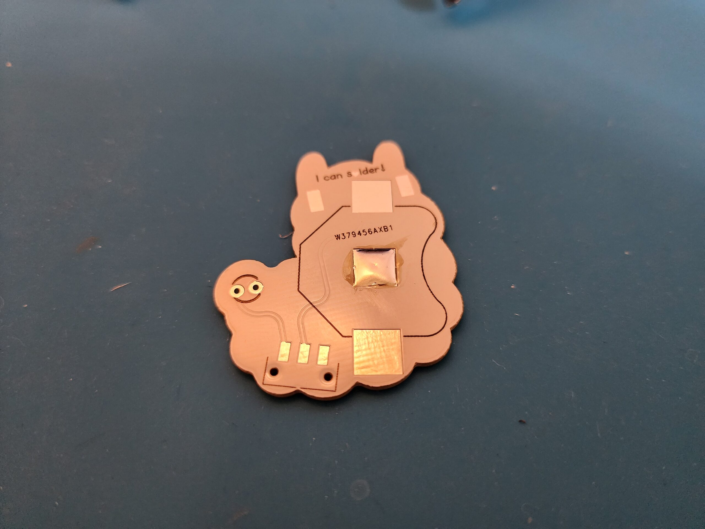
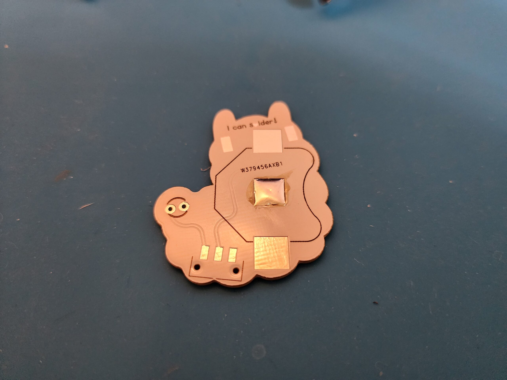
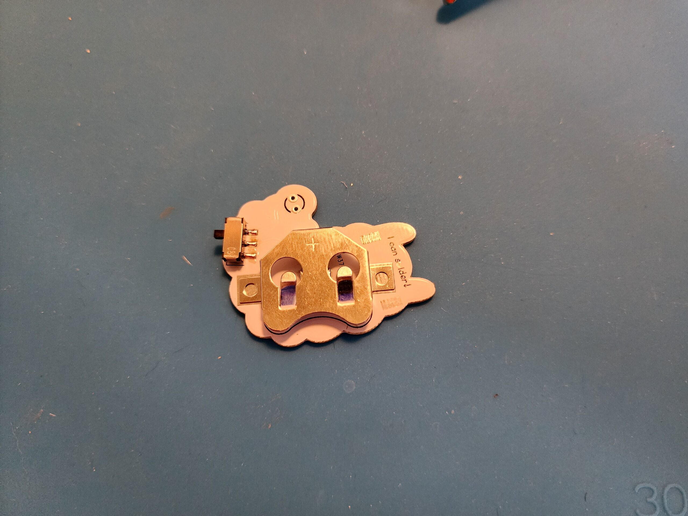
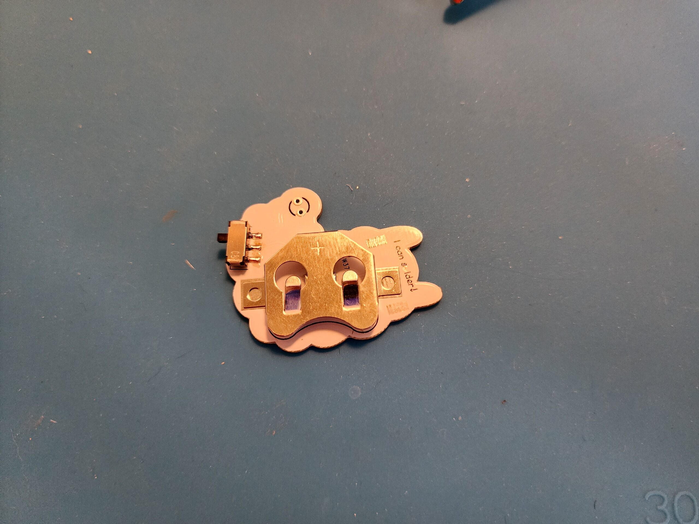
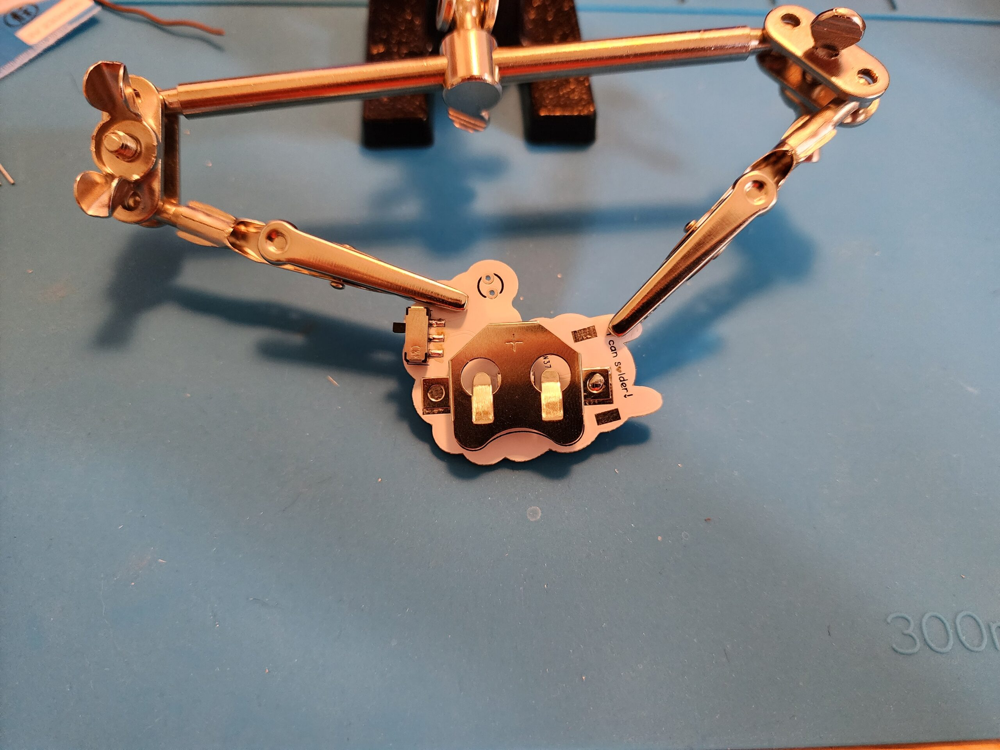
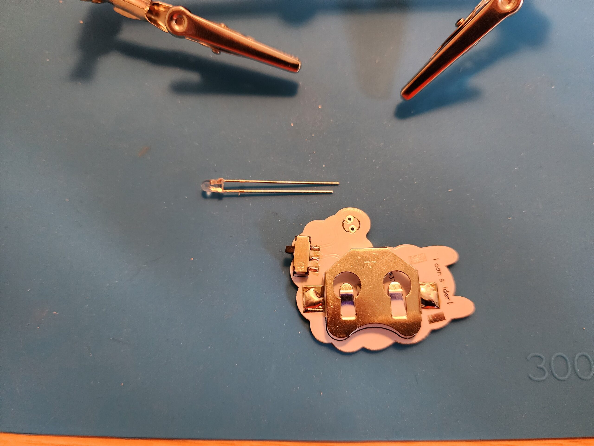
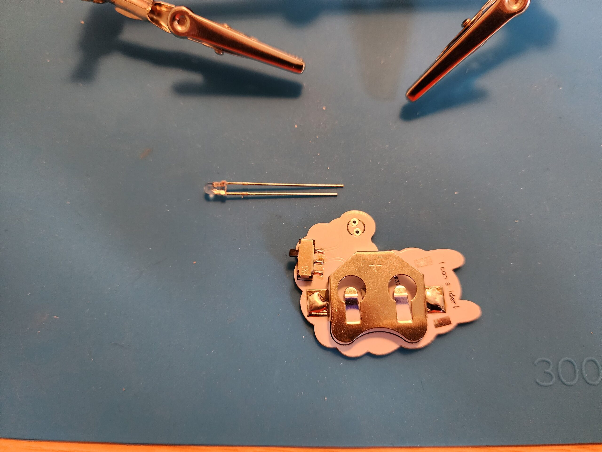
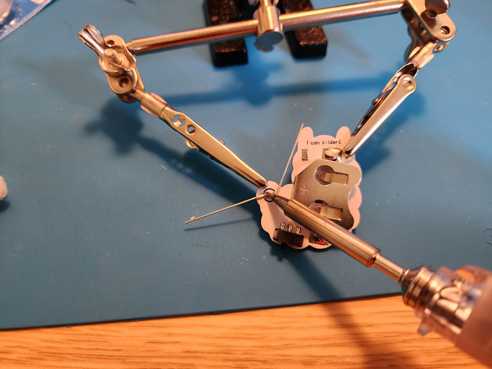
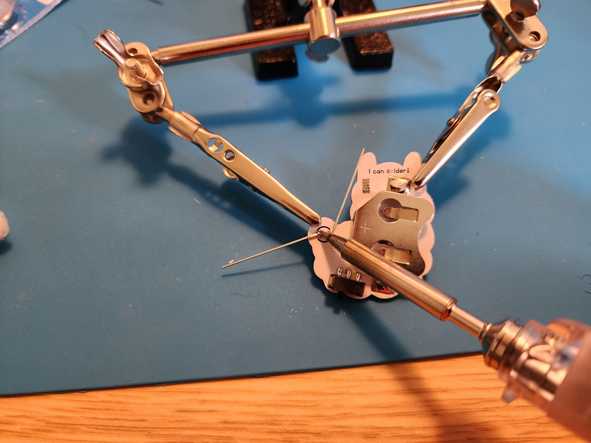
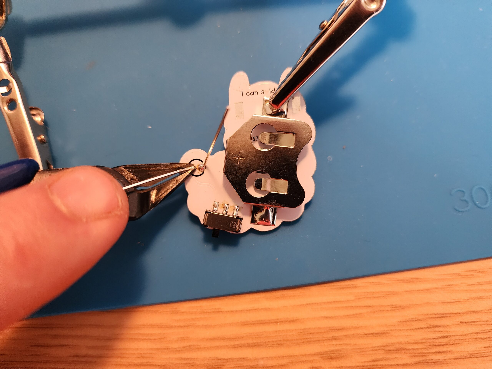

Step 1: Gather Your Components
Make sure you have all the components ready:
- 1 x 2032 Battery
- 1 x Metal Battery Clip
- 1 x 3mm LED
- 1 x Switch
- 1 x Cotton Ball

Step 1: Solder Hill
First step lay the PCB flat and soldering a small hill on the middle solder pad. Make sure the hill is shallow and has no sharp parts.


Step 2: Solder Hill
Wait for the PCB to cool and then hold it up if you can see the bump from the side it is tall enough.

 

Step 3: Solder Hill
Place the switch into the location as shown, it has two plastic tabs that should fit in flatly into the pcb.

Step 4:
Solder each one of the tabs.


Step 5:
Next is the battery clip, this is tricky and will take pushing a fair amount of heat into the pcb so its important to use the helping hands.
 

Step 6:
Use one of the clips to help hold the battery clip in position, have the other clip hold the pcb, and have the PCB touching the table to make 3 point of contacts for a more secure platform.

Step 7:
Solder one side, it doesnt need to be perfect just enough to hold it.


Step 8:
It should look something like this. In the picture you will see that it looks like some solder has gone under the plate and is coming out of the corner. That means there is a layer



 

Step 9:
Next is the LED. Push it throgh the holes on the front side of the aplpaca. The short leg of the LED should point toward the middle of the alpaca.


Step 10:
Fold the legs of the LED down flat. Solder the legs to the PCB.
 


Step 11:
Trim the legs of the LED with the wire cutters. Be sure to hold onto the piece you're going to cut and THEN cut it. Don't let it go flying!

Step 12:
Ask a volunteer for a battery. Place the battery into the battery holder and switch it on to see if your alpaca lights up!


Step 13:
Be sure to throw away the little bits of solder into the red trash cans on your work station.

Step 14:
Time to add the alpaca's tail! Step over to the hot glue station and add a dollop of hot glue to the LED.


Step 15:
Roll your cotton ball into round ball and place it on the LED.